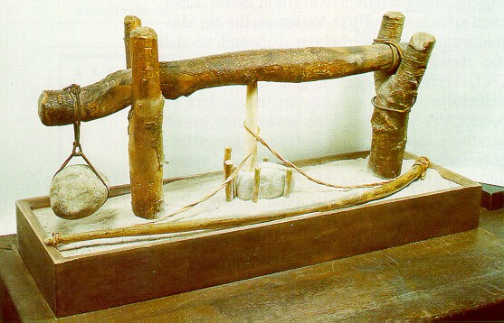

LMP>Research Guidelines>DUECO>Studies Development on Drilling Process
INTRODUCTIONDrilling operation is one of the oldest processes utilized by men. During the Stone Age men made use of silex and bones as tools in some kind of manual driller (figure) that depended mainly on its executer skills. Registers that indicate that this operation was one of the first executed on metals has also been found. Even along all this years, drilling keep its importance within fabrication
processes, being yet today of great importance for industrial processes. LMP´s drilling study group exists since 1990, which has been developing continuously researches on this important operation. During this time several master works had been generated, as well as
uncountable specific studies for partner companies, which lead to a
great pile of knowledge
about this theme. OBJECTIVESThe research maintenance in this area aims to improve drilling process technological and economic efficiency, supplying technical support to current productive processes. New technologies development had also been searched, which might furnish the fabrication processes needs, which are greatly demanded each time. RESEARCH DEVELOPMENTProcess based studies had been developed, creating basic knowledge and process
parameters dominion.

|
| Contact:
DUECO Rolf Bertrand Schroeter Prof. Dr. Eng. |
Last update 12.07.2006 |